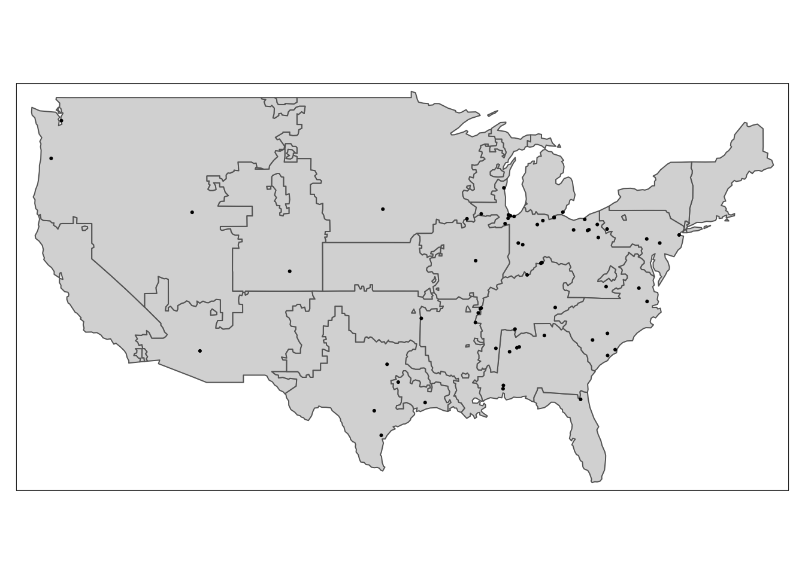

library(terra)
library(sf)
library(raster)
library(here)
library(janitor)
library(tidyverse)
library(tmap)
library(rmapshaper)state_emissions_per_plant
Loading Libraries
Importing eGrid Data
## Importing state electricity values
# egrid2021_data <- readxl::read_excel(here("data", "eGRID2021_data.xlsx"), sheet = "ST21") %>%
# clean_names()
## Importing grid region electricity values
egrid2021_data <- readxl::read_excel(here("data", "eGRID2021_data.xlsx"), sheet = "SRL21") %>%
clean_names()Standardizing state names and cleaning up rows
# state_emissions <- egrid2021_data %>%
# mutate(co2e = state_annual_co2_equivalent_combustion_output_emission_rate_lb_m_wh
# , state = state.name[match(state_abbreviation, state.abb)]) %>%
# select(c(state, co2e))
#
# state_emissions <- state_emissions[-1,]
subregion_emissions <- egrid2021_data %>%
mutate(co2e_lb_per_mwh = as.numeric(e_grid_subregion_annual_co2_equivalent_combustion_output_emission_rate_lb_m_wh)
, subregion = e_grid_subregion_acronym
, subregion_name = e_grid_subregion_name) %>%
filter(!subregion %in% c("AKGD", "AKMS", "HIMS", "HIOA", "PRMS")) %>%
select(c(subregion, subregion_name, co2e_lb_per_mwh))Warning in mask$eval_all_mutate(quo): NAs introduced by coercionsubregion_emissions <- subregion_emissions[-1,]Importing GEM data
gem_data <- readxl::read_excel(here("data", "GEM_2022_data.xlsx"), sheet = "Steel Plants") %>%
clean_names()Filtering to only look at plants and data that we are interested in
plant_capacity_data_processing <- gem_data %>%
filter(country == "United States"
, status == "operating"
, nominal_eaf_steel_capacity_ttpa != "N/A") %>%
mutate(plant_name = plant_name_english
, state = subnational_unit_province_state
, eaf_capacity = as.numeric(nominal_eaf_steel_capacity_ttpa)) %>%
select(plant_name
, owner
, coordinates
, country
, state
, status
, start_date
, plant_age_years
, eaf_capacity
, municipality)Only selecting columns we need for now
plant_capacity <- plant_capacity_data_processing %>%
select(-c(country
, owner
, start_date
, plant_age_years
, status)) %>%
separate(coordinates, c("lat", "lon"), remove = TRUE, ",")Finding where plants are located in subregions
## Reading in data
subregion_shapes_raw <- read_sf("~/Desktop/meds-courses/capstone-files/data/egrid2020_subregions/eGRID2020_subregions.shp") %>%
clean_names() %>%
filter(!zip_subregi %in% c("AKGD", "AKMS", "HIMS", "HIOA", "PRMS"))
## Making our file easier to load and map
subregion_shapes <- ms_simplify(subregion_shapes_raw, keep = 0.0005)
## Bringing in our points
plant_points <- st_geometry(st_as_sf(plant_capacity, coords = c("lon", "lat"))) %>%
st_set_crs("WGS84")
## Plotting to make sure that we have overlaps
tm_shape(subregion_shapes) +
tm_polygons() +
tm_shape(plant_points) +
tm_dots()
overlap <- st_within(plant_points, subregion_shapes)
## Going through plant_points and get the numeric value that is outputted and store that indexed value into subregion_vector()
subregion_vector <- c()
for (i in seq_along(overlap)) {
subregion_vector[i] <- subregion_shapes$zip_subregi[overlap[[i]]]
}
## Adding column
plant_capacity <- plant_capacity %>%
mutate(subregion = subregion_vector)Merging data
plant_emissions_by_subregion <- left_join(plant_capacity, subregion_emissions, by = "subregion")Importing AISI data
AISI_regions_readin <- readxl::read_excel(here("data", "AISI_regions.xlsx"), sheet = "Regions by State") %>%
clean_names()
# AISI_city_readin <- readxl::read_excel(here("data", "AISI_regions.xlsx"), sheet = "Region by City") %>%
# clean_names()
AISI_data_readin <- readxl::read_excel(here("data", "AISI_data.xlsx"), sheet = "AISI Production Values") %>%
clean_names()NE = Northeast
GL = Great Lakes
MW = Midwest
S = Southern
W = Western
AISI_regions <- AISI_regions_readin %>%
filter(steel_plant_in_gspt == "yes")
AISI_data <- AISI_data_readin %>%
mutate(week_end_date = week_end_date_1
, NE_util = north_east_region_capacity_utilization
, GL_util = great_lakes_region_capacity_utilization
, MW_util = midwest_region_capacity_utilization
, S_util = southern_region_capacity_utilization
, W_util = western_region_capacity_utilization) %>%
select(week_end_date
, NE_util
, GL_util
, MW_util
, S_util
, W_util) %>%
filter(week_end_date < "2022-01-01") ## Missing January 2021 data
AISI_data <- AISI_data[-1,]Merging All Data
regional_plant_emissions <- left_join(plant_emissions_by_subregion, AISI_regions, by = "state") %>%
select(-c(steel_plant_in_gspt
, state_abbreviation)) %>%
mutate(region = case_when(municipality %in% c("Alton"
, "Sterling"
, "Peoria"
, "Granite City"
, "Mansfield"
, "Middletown") ~ "Midwest"
, municipality %in% c("Riverdale"
, "Chicago"
, "Bourbonnais"
, "Cuyahoga Heights"
, "Cleveland"
, "Toledo"
, "Lorain") ~ "Great Lakes"
, municipality %in% c("Mingo Junction"
, "Youngstown"
, "Canton") ~ "North East"
, TRUE ~ as.character(region)))Emissions Intensity
## co2e_lb_per_mwh is from eGrid and is pounds of CO2e per MWH of electricity produced per grid location (not regional location)
## Global Efficiency Intelligence states that it takes 710 KWH to produce 1 tonne of steel. "Global Efficiency Intelligence: Industrial Electrification in U.S. States"
## MWH per tonne of steel
eaf_MWH_per_tonne <- 710 / 1000
## emissions_intensity is pounds of CO2e per tonne of steel (the amount of co2e produced for every tonne of steel produced)
AISI_longer <- AISI_data %>%
pivot_longer(cols = c(NE_util, GL_util, MW_util, S_util, W_util)
, names_to = "region"
, values_to = "utilization") %>%
mutate(region = case_when(region == "NE_util" ~ "North East"
, region == "GL_util" ~ "Great Lakes"
, region == "MW_util" ~ "Midwest"
, region == "S_util" ~ "Southern"
, region == "W_util" ~ "Western"))
## eaf_capacity is in thousand tonnes per year and we are standardizing to tonnes per week
## Converting to per thousand tons for weekly co2e
plant_emissions_long <- left_join(regional_plant_emissions, AISI_longer, by = "region") %>%
mutate(emissions_intensity_co2e_lb_per_tonne = (co2e_lb_per_mwh * eaf_MWH_per_tonne)
, eaf_capacity_tonnes_of_steel_per_week = ((eaf_capacity * 1000) / 52)
, scope2_co2e_tonnes_per_week = (eaf_capacity_tonnes_of_steel_per_week * utilization * emissions_intensity_co2e_lb_per_tonne) / 2204.62262185) %>%
mutate_if(is.numeric, round, 2)
plant_emissions_wide <- plant_emissions_long %>%
select(-utilization) %>%
pivot_wider(names_from = week_end_date
, values_from = scope2_co2e_tonnes_per_week)write_csv(plant_emissions_wide, file = here("scope_2_steel_plant_emissions.csv"))